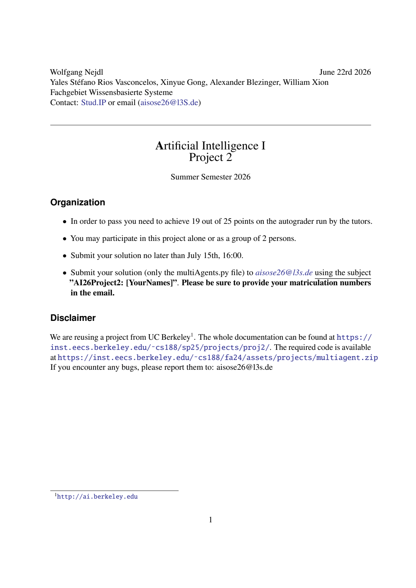

Heterogeneous documents → mapping-ready data for Knowledge Graph construction. An orchestrator agent routes each document through layout analysis, table extraction, and OCR — with calibrated confidence and a fully auditable decision trace. The human expert stays in charge of the final mapping.
Every result below is an actual pipeline output committed to the repo — nothing mocked.

[route] → pdf_digital
text layer has 1483 chars/page
[select_engine] → docling
cheapest engine supporting pdf_digital
[accept] → write_package
16,212 chars · confidence 0.938## Organization
- In order to pass you need to achieve 19
out of 25 points on the autograder ...
- Submit your solution no later than
July 15th, 16:00.Because the text layer was detected, OCR was skipped entirely — a routing decision, not a constant. The same page rendered as an image goes down the OCR path instead and still reaches confidence 0.933.
Which OCR engine should the pipeline trust? We benchmarked candidates on the same pages across four degradation levels, with the PDF text layer as ground truth. Word-level F1 (order-insensitive) and speed:
| condition | engine | precision | recall | F1 | CER | s/page |
|---|---|---|---|---|---|---|
| clean 300 dpi | RapidOCR | 0.984 | 0.980 | 0.982 | 0.003 | 1.6 |
| EasyOCR | 0.981 | 0.976 | 0.978 | 0.040 | 10.8 | |
| fax 150 dpi | RapidOCR | 0.974 | 0.956 | 0.965 | 0.005 | 1.2 |
| EasyOCR | 0.967 | 0.944 | 0.955 | 0.067 | 5.1 | |
| poor 100 dpi + blur | RapidOCR | 0.973 | 0.969 | 0.971 | 0.017 | 0.9 |
| EasyOCR | 0.785 | 0.733 | 0.758 | 0.106 | 3.6 | |
| awful 100 dpi + jpeg q20 | RapidOCR | 0.966 | 0.929 | 0.947 | 0.039 | 0.8 |
| EasyOCR | 0.457 | 0.423 | 0.439 | 0.229 | 3.8 |
Finding: the engines are nearly tied on clean input, but under degradation EasyOCR collapses (F1 0.44) while RapidOCR holds (0.95) at 4–7× the speed — so RapidOCR is the pipeline default, and the low-confidence escalation path is reserved for genuinely awful scans. Full results & caveats · reproduce it yourself.
package/
├── tables/table_00.csv # extracted, normalized tables
├── text.md # full text in reading order
├── document.json # quality report + agent decision trace
└── raw_export.json # backend-native export (full provenance)Next layers (in progress): semantic column typing, entity candidates, ontology concept suggestions via embedding search, and auto-drafted YARRRML mapping templates — see the roadmap.